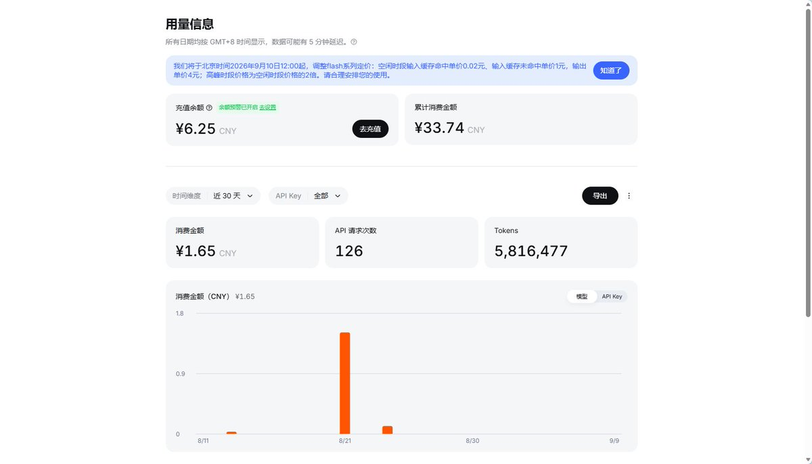

官方公告：我们将于北京时间2026年9月10日12:00起，调整flash系列定价：空闲时段输入缓存命中单价0.02元、输入缓存未命中单价1元，输出单价4元；高峰时段价格为空闲时段价格的2倍。
为什么是这个时间点
1，智谱 GLM-5.3-Flash 的半价促销（0.4/1.4 元）9 月 9 日 24:00 到期，9 月 10 日恢复原价 0.8/2.8 元——DeepSeek 新价恰好 9 月 10 日中午生效，正面对撞 。即便降价后，GLM-5.3-Flash 的刊例价仍比 DeepSeek 空闲价便宜，DeepSeek 并未夺回”全网最低”
2，正在内测的 deepseek-v4.1-flash-expires-on-0910 于 9 月 10 日到期下线，官方称其原生多模态、更快、成本更低 。公告用”flash 系列”的措辞，大概率配合 V4.1-Flash 正式版在同一天接棒上线，届时模型 ID 可能需要切换

为什么是这个时间点
1，智谱 GLM-5.3-Flash 的半价促销（0.4/1.4 元）9 月 9 日 24:00 到期，9 月 10 日恢复原价 0.8/2.8 元——DeepSeek 新价恰好 9 月 10 日中午生效，正面对撞 。即便降价后，GLM-5.3-Flash 的刊例价仍比 DeepSeek 空闲价便宜，DeepSeek 并未夺回”全网最低”
2，正在内测的 deepseek-v4.1-flash-expires-on-0910 于 9 月 10 日到期下线，官方称其原生多模态、更快、成本更低 。公告用”flash 系列”的措辞，大概率配合 V4.1-Flash 正式版在同一天接棒上线，届时模型 ID 可能需要切换

deepseek-v4-flash似乎又降价了，原本空闲时段缓存命中0.05元，缓存未命中3元，输出4.5元，高峰时段2倍
调整后，空闲时段输入缓存命中单价0.02元、输入缓存未命中单价1元，输出单价4元；高峰时段价格为空闲时段价格的2倍 https://t.co/wyAejniWub
调整后，空闲时段输入缓存命中单价0.02元、输入缓存未命中单价1元，输出单价4元；高峰时段价格为空闲时段价格的2倍 https://t.co/wyAejniWub